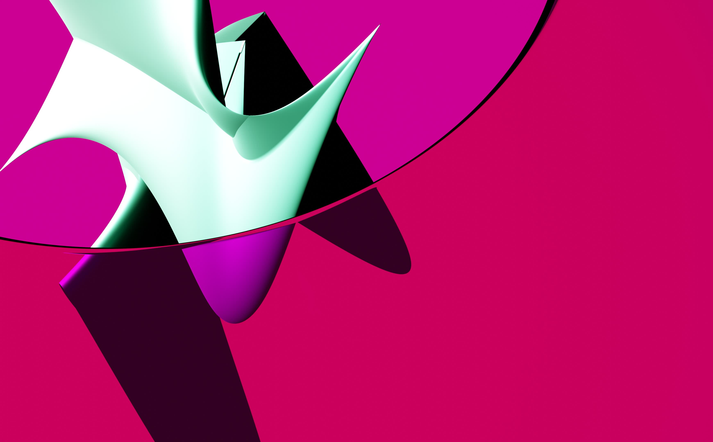

Project Graphic Design & Textiles
Type Posters · Pattern · Spatial Studies
Year 2023 – Present
Tools Photoshop · Procreate · p5.js
Blender · Illustrator
Graphic Design & Textile Studies
Design andTextiles
Scroll to explore →
Scroll
00 Overview
An ongoing practice in 3D, textiles, and posters—colour, form, and type.
Practice
40+Works spanning colour field, form, and pattern studies
TextilesGeometrics, colour, and generative code shaping surfaces and pattern
3DBlender renders exploring material and spatial form
PostersTypography · layouts and print · composition
01Poster design
Graphic design experiments in Photoshop and Blender.
02Textiles
Repeat grids, colour, and generative textile studies using Photoshop, p5,js, and Blender.
03Spatial Studies
Material studies and environment design in Blender 3D.